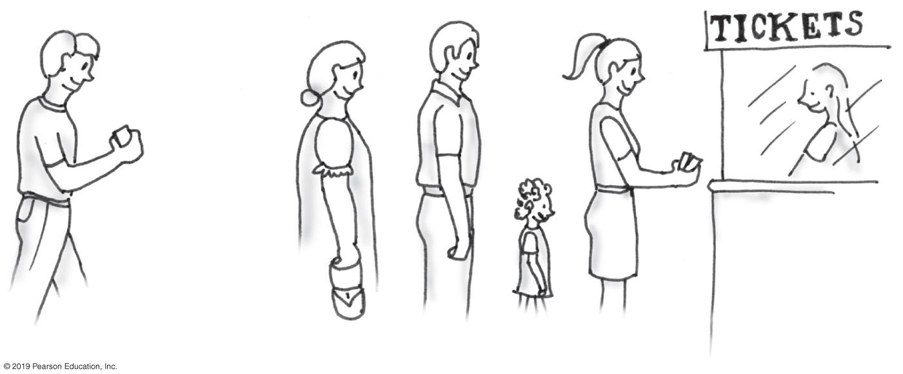
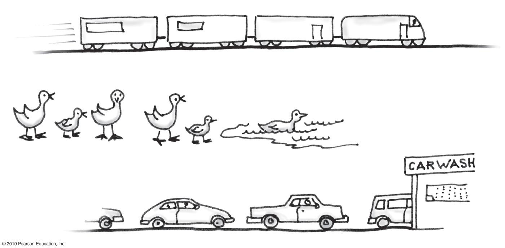
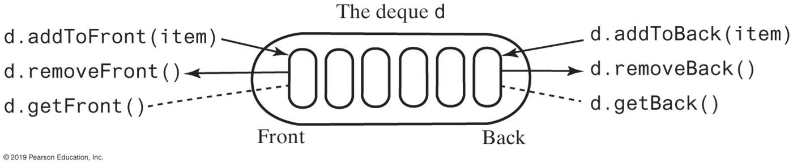
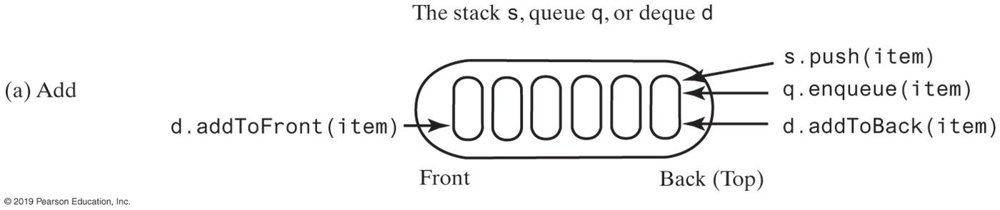
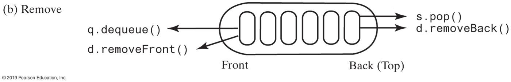
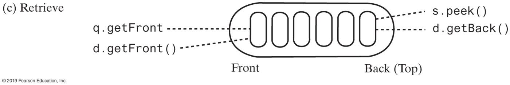

Queues, Deques, and Priority Queues
Adapted from F. M. Carrano and T. Henry, Data Structures and Abstractions with Java, 5th edition, and R. Sedgewick and K. Wayne, Algorithms, 4th edition.

You join a line at the back. The clerk serves whoever is at the front, and nobody cuts in.
Who gets served next: the person who arrived first, or the one who arrived last?

Each one serves the oldest waiting item first.
Both structures start empty and receive \(1, 2, 3, 4\) in that order. Then each one removes two items.
Stack. push four times, pop twice.
Removed \(4, 3\). Left: \(1, 2\).
Queue. enqueue four times, dequeue twice.
Removed \(1, 2\). Left: \(3, 4\).
Chapter 2 removed the item added most recently (LIFO). This chapter removes the item added least recently: first in, first out (FIFO).
| Part | Question it answers |
|---|---|
| 1 | What does a queue promise, and what can a client do with it? |
| 2 | How do you build a queue from linked nodes? |
| 3 | How do you build a queue from an array? |
| 4 | What if both ends add and remove? |
| 5 | What if priority, not arrival, picks the next item? |
As in Chapter 2, some slide titles carry a red mark.
Must Know — we do it in class; expect it on the exam. The rule, the code, or the worked trace a question is built from. Drill these first.
Unmarked — we do it in class, and the exam can still ask about it. No mark does not mean off the exam.
The Queue and Its Clients
The middle of the queue is off limits. No operation reads it, and no operation changes it.
| Operation | Task |
|---|---|
enqueue(newEntry) |
Add a new entry to the back of the queue. |
dequeue() |
Remove and return the entry at the front. |
getFront() |
Return the front entry, leaving the queue unchanged. |
isEmpty() |
Is the queue empty? |
clear() |
Remove every entry. |
Data. A collection of objects of the same type, in chronological order. dequeue() and getFront() on an empty queue throw EmptyQueueException.
/** An interface for the ADT queue. */
public interface QueueInterface<T>
{
/** Adds a new entry to the back of this queue. */
public void enqueue(T newEntry);
/** Removes and returns the entry at the front of this queue.
@throws EmptyQueueException if the queue is empty. */
public T dequeue();
/** Retrieves the entry at the front of this queue.
@throws EmptyQueueException if the queue is empty. */
public T getFront();
/** Detects whether this queue is empty. */
public boolean isEmpty();
/** Removes all entries from this queue. */
public void clear();
} // end QueueInterfaceEvery entry leaves in the order it arrived. Jazmin was third in, and it will be third out.
What does it print?
| statement | queue (front → back) | |
|---|---|---|
| enqueue A, B, C | A B C | |
| enqueue(dequeue()) | B C A | A moved to the back |
| getFront() | B C A | printed B |
| dequeue() | C A | B discarded |
| enqueue D | C A D | |
| dequeue() | A D | printed C |
| getFront() | A D | printed A |
The trap. getFront() does not remove. Read the first getFront() as a dequeue(), and B leaves one step early: the output becomes BAD.
q.enqueue(q.dequeue()); takes the front entry and puts it at the back. Nothing is lost, and the queue has turned by one place.
Do it \(n\) times on a queue of \(n\) entries and every entry is back where it started.
A client that knows \(n\) can visit every entry this way and leave the queue as it found it. The Josephus problem later in this part is built from this move.
The interface has no size(). A client wants to count the entries and leave the queue exactly as it found it.
Why does this loop never finish?
Every entry that leaves the front comes back at the back, so the queue is never empty. The loop also has no way to tell when it has gone all the way around: two entries can be equal.
Move the entries into a second queue while counting, then move them back.
A queue keeps order, so moving the entries twice leaves them in their original order. The cost is \(2n\) dequeues and \(2n\) enqueues: \(O(n)\). Inside the implementation, a count field would make it \(O(1)\).
Queue to queue keeps the order. To reverse it, pass the entries through a stack.
The front entry is pushed first, so it is popped last and ends up at the back. Every entry moves twice: \(O(n)\).
No sequence of queue operations alone can reverse a queue. The stack supplies the reversal.
\(n\) people stand in a circle. Starting at person 1, they count off \(1, 2, 3\) around the circle. Person 3 leaves, and person 4 starts the count again at 1. The counting goes on until one person is left.
With \(n = 8\), who is the last person left? Guess before we trace it.
Counts \(1\) and \(2\) are q.enqueue(q.dequeue()). Count \(3\) is q.dequeue().
/** Removes every kth of n people and returns the last one left. */
public static int josephus(int n, int k)
{
QueueInterface<Integer> q = new LinkedQueue<>();
for (int person = 1; person <= n; person++)
q.enqueue(person);
for (int left = n; left > 1; left--)
{
for (int count = 1; count < k; count++)
q.enqueue(q.dequeue()); // counts 1 to k - 1 stay
System.out.print(q.dequeue() + " "); // count k leaves
}
return q.dequeue();
} // end josephusThe interface has no size(), so left counts the people still in the circle. josephus(8, 3) prints 3 6 1 5 2 8 4 and returns 7.
Six people stand in a circle, and every second person leaves (\(k = 2\)). Give the queue after each removal. Who is left?
| moved to the back | removed | queue (front → back) |
|---|---|---|
| 1 2 3 4 5 6 | ||
| 1 | 2 | 3 4 5 6 1 |
| 3 | 4 | 5 6 1 3 |
| 5 | 6 | 1 3 5 |
| 1 | 3 | 5 1 |
| 5 | 1 | 5 |
Person \(5\) is left. Removed in order: \(2, 4, 6, 3, 1\).
java.util.QueueJava’s library has a Queue interface. Each operation comes in two forms: one throws on failure, the other returns a special value.
| throws an exception | returns a special value | |
|---|---|---|
| add at the back | add(e) |
offer(e) returns false |
| remove the front | remove() |
poll() returns null |
| look at the front | element() |
peek() returns null |
A Chain with Two Ends
Enqueue it, was, the, best into a linked chain. The Chapter 2 stack kept one reference to its chain, topNode. The queue keeps two.
The chain and its two references are the same as on the last slide. Which option should the queue use?
best, the node lastNode refers to.Four nodes took two steps, and \(n\) nodes take \(n - 2\). At this end, dequeue is \(O(n)\).
dequeue removes the first node, as the stack’s pop does. enqueue links a new node after the last node.
Without lastNode, enqueue would walk the whole chain to find the back. With it, both operations change a fixed number of references.
dequeue() takes the front: the node firstNode refers to.enqueue("best") on a queue of three. The back is lastNode.enqueue into an empty queue has no last node to link from.
firstNode and lastNode are both null.dequeue has the matching case. Remove the only entry, and what does lastNode refer to?
firstNode and lastNode refer to the same node.public final class LinkedQueue<T> implements QueueInterface<T>
{
private Node firstNode; // front of the queue
private Node lastNode; // back of the queue
public LinkedQueue() { firstNode = null; lastNode = null; }
public T getFront()
{
if (isEmpty())
throw new EmptyQueueException();
else
return firstNode.getData();
} // end getFront
public boolean isEmpty() { return firstNode == null; }
public void clear() { firstNode = null; lastNode = null; }
// Node: the Chapter 2 class, plus setNext(Node nextNode)
} // end LinkedQueueFive lines are missing. Call each one before it appears.
public void enqueue(T newEntry)
{
Node newNode = new Node(newEntry, null);
if (isEmpty())
firstNode = newNode;
else
lastNode.setNext(newNode);
lastNode = newNode;
} // end enqueue
public T dequeue()
{
T front = getFront(); // might throw EmptyQueueException
firstNode = firstNode.getNext();
if (firstNode == null)
lastNode = null;
return front;
} // end dequeueThe chain holds \(n\) entries. What does each operation cost in the worst case?
enqueue |
dequeue |
getFront |
isEmpty |
clear |
|
|---|---|---|---|---|---|
| worst case | \(O(1)\) | \(O(1)\) | \(O(1)\) | \(O(1)\) | \(O(1)\) |
Each operation reads or changes a fixed number of references, however long the chain is. clear drops two references and the whole chain becomes unreachable.
Link the last node back to the first. The class keeps only lastNode. How does dequeue find the front?
enqueue links the new node after lastNode and moves lastNode. Both operations stay \(O(1)\).
A Circular Array
Enqueue it, was, the, best into an array. The front has to be somewhere.
First try. Keep the front at index \(0\), like the bottom of the Chapter 2 stack.
enqueue stores at the first empty index: \(O(1)\). dequeue removes index \(0\), and the other \(n - 1\) entries shift left one place each: \(O(n)\).
Second try. Leave the entries where they are. Keep two indices, frontIndex and backIndex, and move them instead.
After the last step backIndex is \(7\), the last index. Indices \(0\), \(1\), and \(2\) are empty, and the next enqueue has nowhere to go.
Every dequeue leaves an empty slot at the front that no later enqueue reaches. After \(n\) enqueues in total, the array reports full, however many entries have left.
The fix. When backIndex passes the last index, send it back to \(0\). Treat index \(0\) as the slot after index \(n - 1\).
Draw index \(n - 1\) next to index \(0\). Fill an empty queue until every slot is used.
frontIndex = 0, backIndex = 7.Empty. frontIndex is one slot past backIndex: frontIndex == (backIndex + 1) % n.
Full, every slot used. frontIndex is also one slot past backIndex. The ring on the last slide ended with frontIndex = 0, backIndex = 7, the same as when it started empty.
The two indices alone cannot tell the two states apart. A count field would, at the cost of one more field to update in every method. Our implementation gives up one slot instead.
Declare the queue full when one slot is still empty. The array has length \(n\).
| state | test |
|---|---|
| empty | frontIndex == (backIndex + 1) % n |
| full | frontIndex == (backIndex + 2) % n |
A new queue starts with frontIndex = 0 and backIndex = n - 1, which passes the empty test. The queue holds at most \(n - 1\) entries.
A circular-array queue uses an array of length \(12\) and leaves one slot unused. How many entries can it hold before it must grow?
With \(11\) entries, backIndex is two slots behind frontIndex and the full test holds.
The entries run from frontIndex forward to backIndex, wrapping past the end when needed.
\[\text{entries} \;=\; (\,\texttt{backIndex} - \texttt{frontIndex} + 1 + n\,) \bmod n\]
Example. \(n = 8\), frontIndex = 6, backIndex = 2. The entries sit at indices \(6, 7, 0, 1, 2\): \((2 - 6 + 1 + 8) \bmod 8 = 5\).
The \(+\,n\) keeps the value non-negative when the queue wraps. An empty queue gives \(0\) and a full one gives \(n - 1\).
A circular-array queue of length \(n = 10\) has frontIndex = 7 and backIndex = 3. How many entries does it hold?
Indices \(7, 8, 9, 0, 1, 2, 3\) hold entries: \((3 - 7 + 1 + 10) \bmod 10 = 7\).
public final class ArrayQueue<T> implements QueueInterface<T>
{
private T[] queue; // circular array of queue entries
private int frontIndex; // index of the front entry
private int backIndex; // index of the back entry
private static final int DEFAULT_CAPACITY = 50;
public ArrayQueue() { this(DEFAULT_CAPACITY); }
public ArrayQueue(int initialCapacity)
{
@SuppressWarnings("unchecked")
T[] tempQueue = (T[]) new Object[initialCapacity + 1]; // one unused slot
queue = tempQueue;
frontIndex = 0;
backIndex = initialCapacity; // queue.length - 1
} // end constructor
public boolean isEmpty()
{ return frontIndex == ((backIndex + 1) % queue.length); }
} // end ArrayQueueFour lines are missing. Call each one before it appears.
public void enqueue(T newEntry)
{
ensureCapacity(); // grows a full array
backIndex = (backIndex + 1) % queue.length;
queue[backIndex] = newEntry;
} // end enqueue
public T dequeue()
{
T front = getFront(); // might throw EmptyQueueException
queue[frontIndex] = null; // no loitering
frontIndex = (frontIndex + 1) % queue.length;
return front;
} // end dequeuegetFront() checks for an empty queue and returns queue[frontIndex].
Call the next state
enqueue 15, 25, 35, 45; dequeue twice; enqueue 55, 65, 75.
frontIndex = 0, backIndex = 5.The trace ended with frontIndex = 2 and backIndex = 0.
Full test. \((0 + 2) \bmod 6 = 2 =\) frontIndex. The queue is full.
Five entries in six slots; index \(1\) is the unused one. The next enqueue has to grow the array first.
ensureCapacity() doubles a full array. The entries may wrap past the end of the old one.
(1 + 2) % 7 == 3. The next enqueue doubles it to length 14.private void ensureCapacity()
{
if (frontIndex == ((backIndex + 2) % queue.length)) // full
{
T[] oldQueue = queue;
int oldSize = oldQueue.length;
@SuppressWarnings("unchecked")
T[] tempQueue = (T[]) new Object[2 * oldSize];
queue = tempQueue;
for (int index = 0; index < oldSize - 1; index++)
{
queue[index] = oldQueue[frontIndex];
frontIndex = (frontIndex + 1) % oldSize;
} // end for
frontIndex = 0;
backIndex = oldSize - 2;
} // end if
} // end ensureCapacityThe loop copies \(\texttt{oldSize} - 1\) entries, one per used slot. The same copy without changing frontIndex inside the loop reads oldQueue[(frontIndex + index) % oldSize].
A queue in an array of length \(5\) has frontIndex = 3 and backIndex = 1:
| index | 0 | 1 | 2 | 3 | 4 |
|---|---|---|---|---|---|
| value | 8 | 6 | – | 7 | 9 |
Is it full? Then enqueue(5): draw the new array and give both indices.
Full: \((1 + 2) \bmod 5 = 3 =\) frontIndex. The front-to-back order is \(7, 9, 8, 6\).
New array of length \(10\): \(7, 9, 8, 6, 5\) at indices \(0\) to \(4\). frontIndex = 0, backIndex = 4.
| linked chain | circular array | |
|---|---|---|
enqueue |
\(O(1)\) worst case | \(O(1)\) amortized; \(O(n)\) when it doubles |
dequeue, getFront |
\(O(1)\) | \(O(1)\) |
clear |
\(O(1)\) | \(O(n)\): set each used slot to null |
| memory per entry | one node: data and next |
one slot, plus unused slots |
| unused space | none | one slot always; about half the slots right after a doubling |
This is the same trade-off as for the Chapter 2 stack. The chain never has a slow operation. The array uses less memory per entry and has no node objects to allocate.
The Deque
A double-ended queue, or deque (pronounced “deck”), adds, removes, and retrieves at both ends.

addToBack and removeFront make it a queue. addToBack and removeBack make it a stack.



Front to back, what is in the deque?
X → Y X → Y X Z → X Z → removeBack returns Z and addToFront puts it first: Z X.
You type a line and fix mistakes with the backspace key ←, which deletes the most recent character still on the line.
\[\texttt{c o m ← m p t e ← ← u t r ← e r}\]
What line do you end up with?
computer
Backspace removes the newest character. Printing the line needs the oldest character first. One structure has to do both.
A stack alone would print the line backwards. A queue alone cannot remove the newest character.
Your turn. q u u ← e u e ← ← u e prints queue.
Put the characters of a word into a deque. Then remove one from each end and compare, until fewer than two remain.
level: l = l, e = e, then only v is left. Two comparisons; it is a palindrome.
loops: l ≠ s. One comparison; it is not.
A word of \(n\) characters needs at most \(\lfloor n/2 \rfloor\) comparisons: \(O(n)\) for the check, after \(O(n)\) to fill the deque.
A class implements QueueInterface<T> by keeping its entries in a deque d. Which pair of bodies is correct?
enqueue: d.addToBack(e); dequeue: d.removeBack()enqueue: d.addToBack(e); dequeue: d.removeFront()enqueue: d.addToFront(e); dequeue: d.removeFront()enqueue: d.addToFront(e); dequeue: d.getBack()A queue adds at one end and removes at the other. A and C use one end for both, which is a stack. D never removes anything.
Build the deque from the Part 2 chain: firstNode, lastNode, and one next reference per node.
Which of the six operations cannot be \(O(1)\)?
removeBack must make the next-to-last node the new lastNode. The links run forward only, so finding that node means walking from firstNode: \(O(n)\).
removeBack() on four entries:firstNode.getPrevious() and lastNode.getNext() are both null.
public void addToBack(T newEntry)
{
DLNode newNode = new DLNode(lastNode, newEntry, null);
if (isEmpty())
firstNode = newNode;
else
lastNode.setNext(newNode);
lastNode = newNode;
} // end addToBack
public T removeBack()
{
T back = getBack(); // might throw EmptyQueueException
lastNode = lastNode.getPrevious();
if (lastNode == null)
firstNode = null;
else
lastNode.setNext(null);
return back;
} // end removeBackAll six operations are \(O(1)\) in the worst case. addToFront and removeFront mirror the two methods on the last slide, with firstNode and previous in place of lastNode and next.
The price. One more reference per node, and one more link to keep correct on every add and every remove.
Java’s ArrayDeque keeps a deque in a circular array instead, the Part 3 structure with both indices free to move either way. Its documentation says it is “likely to be faster than Stack when used as a stack, and faster than LinkedList when used as a queue.”
The Priority Queue
A hospital emergency room does not treat patients in arrival order. A patient with chest pain is seen before one who arrived earlier with a sprained wrist.
A priority queue removes the entry with the highest priority, whenever it arrived. What “priority” means depends on the entries: a triage level, a deadline, a cost.
Throughout this course, when priorities are numbers, a smaller number means a higher priority, unless a problem says otherwise.
| Operation | Task |
|---|---|
add(newEntry) |
Add a new entry. |
remove() |
Remove and return the entry with the highest priority. |
peek() |
Return the highest-priority entry, leaving it in place. |
isEmpty(), getSize(), clear() |
As before. |
java.util.PriorityQueue removes the smallest entry first.
remove() returns \(7\), the smallest of \(14, 10, 7\), and add(number) puts the same \(7\) back. After add(16) the queue holds \(7, 10, 14, 16\).
The order of the add calls does not matter. poll() always returns the smallest entry left, so the output is sorted: 7 10 14 16.
Entries (item, priority) arrive in this order, and entries with equal priority leave in the order they arrived:
\[(P, 2) \quad (Q, 1) \quad (R, 2) \quad (S, 1)\]
In what order do four remove calls return them?
\(Q, S, P, R\). Priority decides first; arrival order breaks ties.
java.util.PriorityQueue makes no promise about ties. A client that needs first-come order among equals adds an arrival counter to the comparison.
Keep the entries sorted by priority, so remove and peek never search.
add |
remove |
peek |
|
|---|---|---|---|
| sorted array, highest priority at index 0 | \(O(n)\) | \(O(n)\) | \(O(1)\) |
| sorted array, highest priority at the end | \(O(n)\) | \(O(1)\) | \(O(1)\) |
| sorted chain, highest priority first | \(O(n)\) | \(O(1)\) | \(O(1)\) |
add is \(O(n)\) in every row: the array shifts entries to make room, and the chain walks to the right spot. A heap, later in the course, makes both add and remove \(O(\log n)\).
| task | ADT |
|---|---|
| Print jobs, printed in the order they were sent | queue |
| Undo the most recent edit | stack |
| Standby passengers boarded by frequent-flyer status | priority queue |
| Browser history that drops its oldest page when full | deque |
The last one adds new pages and goes Back at one end, and drops old pages at the other end.
enqueue and dequeue for the linked chain and the circular array, including the empty and one-entry cases.CSCI 2336 Data Structures